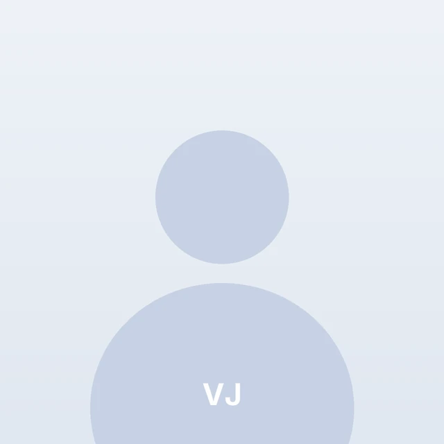
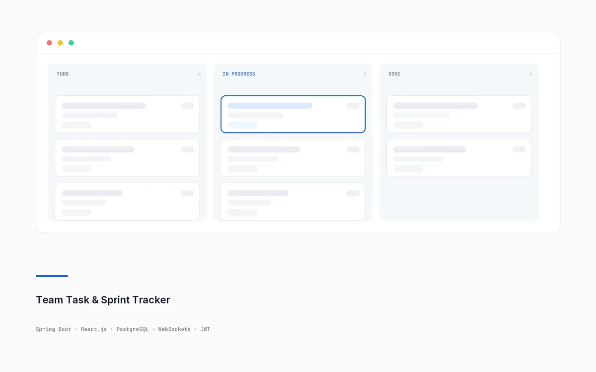
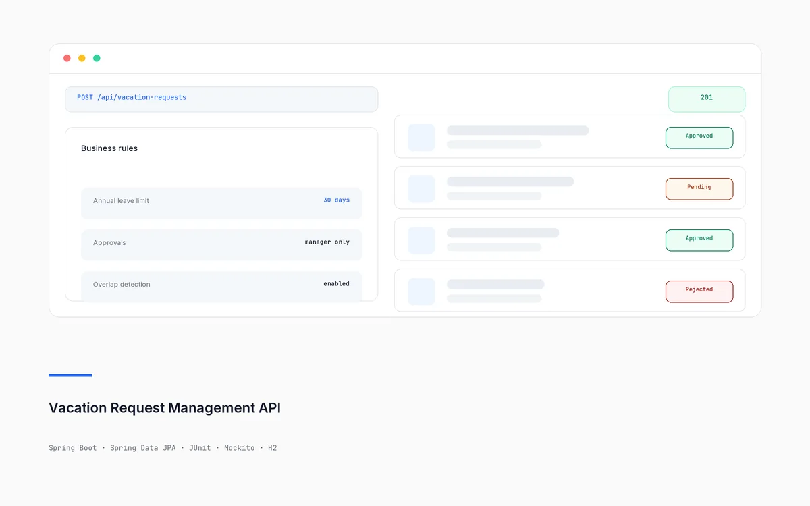
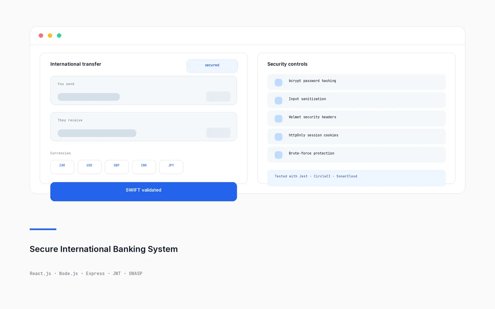
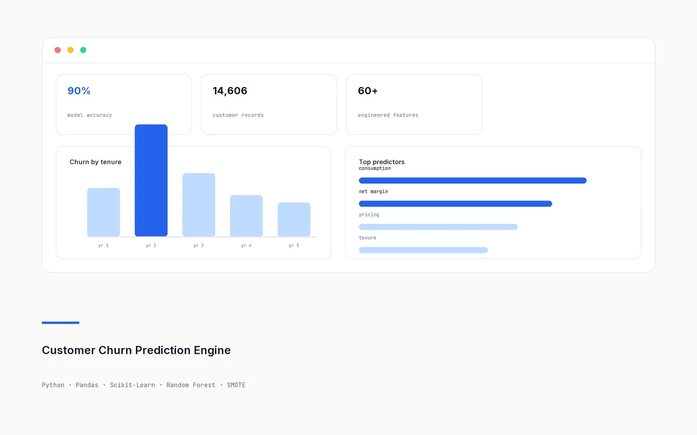
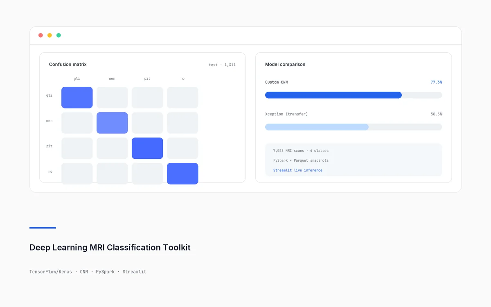
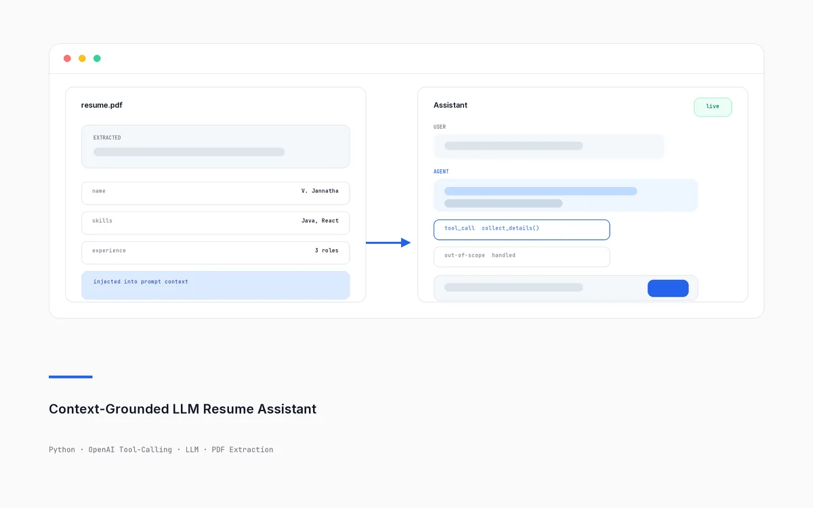

Postgraduate Diploma in Data Analytics
High Distinction · 88% avg (~9.26 CGPA)
Coursework: Predictive Modeling, Machine Learning, Statistical Analysis, Data Visualization.
Full-Stack Developer | Java, Spring Boot, React
Immediate Joiner · Open to Hyderabad / Bengaluru
Full-stack developer with a year of production experience as a Junior Developer. I build secure, well-tested REST APIs and real-time applications in Java, Spring Boot, React.js and SQL, backed by a postgraduate diploma in data analytics.

Full-stack applications and data projects, with a short case study behind each one.
Illustrative preview

Featured · Full-Stack
Full-stack sprint management app with real-time Kanban updates and secured REST APIs.
Teams plan work as Projects → Sprints → Tasks → Comments, and the Kanban board updates live for everyone viewing it.
Java · Spring Boot · Spring Data JPA · Spring Security · JWT · WebSockets (STOMP/SockJS) · React.js · PostgreSQL
Illustrative preview

Role-based REST API for vacation requests and manager approvals.
Employees submit vacation requests and managers approve or reject them, with policy validation and role-based access control.
Java · Spring Boot · Spring Data JPA · JUnit · Mockito · H2
Illustrative preview

Full-stack multi-currency payment app built with security best practices.
Multi-currency payment app with SWIFT validation and OWASP-based security hardening.
React.js · Node.js · Express · JWT · bcrypt · Helmet · Jest · CircleCI · SonarCloud
Illustrative preview

Random Forest churn model on 14,606 utility customers.
Predicts which utility customers are likely to leave and identifies the main churn drivers.
Python · Pandas · NumPy · Scikit-Learn · Seaborn · SMOTE · RandomizedSearchCV
Illustrative preview

CNN pipeline classifying 7,023 MRI scans into 4 diagnostic classes.
Takes an MRI scan and predicts which of four diagnostic classes it belongs to, served through a live web application.
Python · TensorFlow/Keras · CNN · Xception · PySpark · Apache Parquet · Streamlit
Illustrative preview

Resume-aware LLM assistant with strict tool-calling and multi-turn memory.
LLM assistant grounded in a user's resume, using strict tool-calling and multi-turn memory.
Python · OpenAI Tool-Calling · LLM orchestration · PDF extraction · Environment-based secrets
DigiCall Group
May 2024 — Mar 2025
Cape Town, South Africa (Remote)
High Distinction · 88% avg (~9.26 CGPA)
Coursework: Predictive Modeling, Machine Learning, Statistical Analysis, Data Visualization.
High Distinction · 87% avg (~9.16 CGPA)
Coursework: Data Structures & Algorithms, Database Management Systems, Operating Systems, Software Engineering, Object-Oriented Programming (Java), Computer Networks.
Indian citizen, immediate joiner. Looking for full-stack developer roles — email is the fastest way to reach me.
Hyderabad, India · Open to Hyderabad / Bengaluru